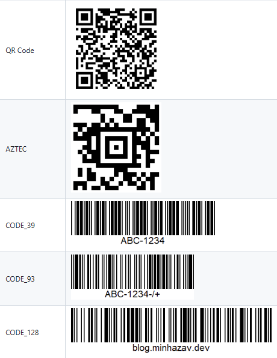
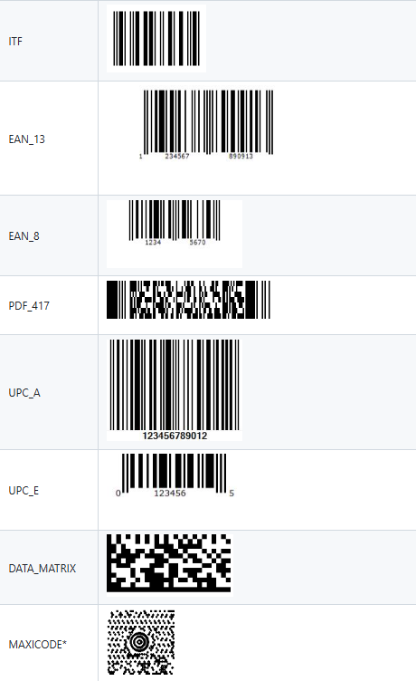
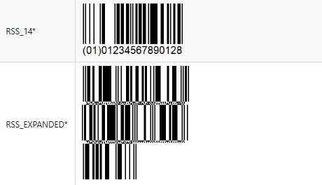
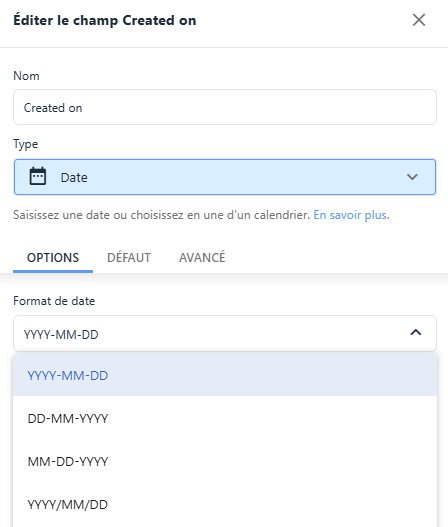

FAQ
Quels sont les formats de QR code supportes



Quel est le format de date supporte par Zyllio
Zyllio supporte nativement le format ISO : YYYY-MM-DD HH:mm
Quel format de date faut-il definir sur ma colonne date Timetonic
Le format de date defini sur la colonne Timetonic doit etre YYYY-MM-DD

Pourquoi mon composant Navigation n'apparait plus en mode Tablette/Desktop
Le composant Navigation necessite la presence d'un composant Header dans lequel il s'inscrit
Erreurs Airtable communes
| Message | Commentaire |
|---|---|
| Insuficient permission to create new select option | Airtable indique qu'une colonne de type Options recoit une valeur non permise. Cela n'est pas lie a votre Personal Token. Veuillez verifier les champs Options de votre action Zyllio ou bien vos colonnes Airtable. |
Erreurs Timetonic communes
| Message | Commentaire |
|---|---|
| Vos donnees ne peuvent pas etre modifiees pour des raisons techniques | Verifiez que vous n'avez pas de colonne Attachement unique. Les attachements doivent etre multiples. |